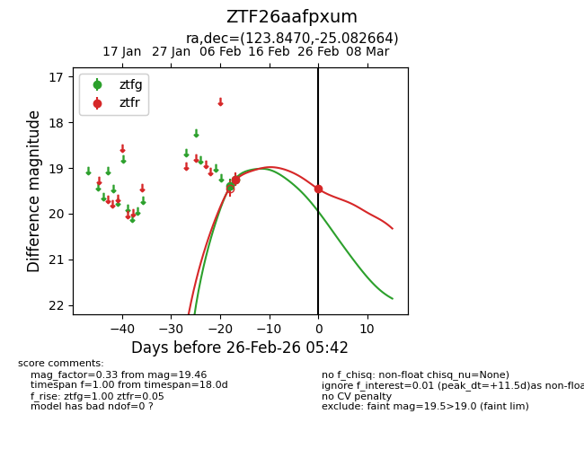
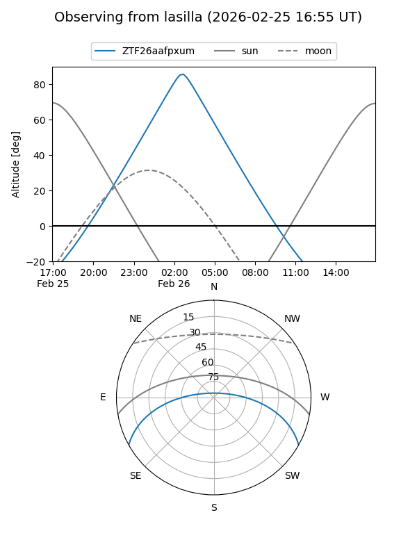
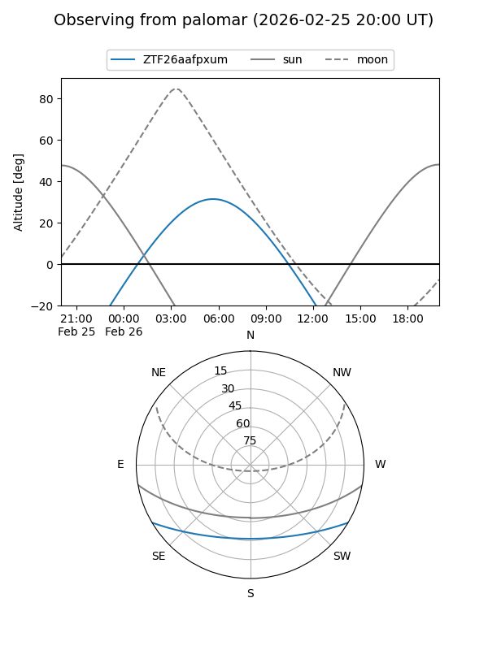
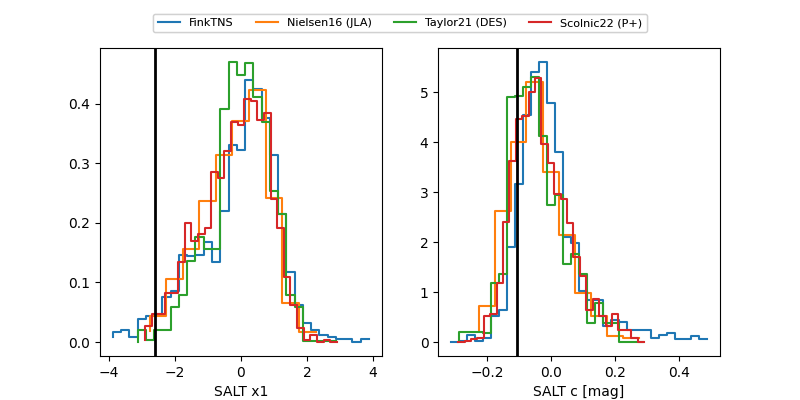

ZTF26aafpxum
Target ZTF26aafpxum at 2026-02-26 05:44
Aliases and brokers:
FINK: link
Lasair: link
ALeRCE: link
alt names
ZTF26aafpxum (ztf,fink_ztf)
Coordinates:
equatorial (ra, dec) = 123.8470,-25.08266
equatorial (HMS+DMS) = 08:15:23.28,-25:04:57.59
galactic (l, b) = (244.7761,+5.47430)
Flags:
Photometry:
last ztfg=19.26, ztfr=19.46
2 ztfg, 2 ztfr detections
Lightcurve

Visibility


Additional plots
